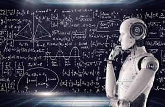

Capitolo 1
vai alla pagina indice
Vai al primo Paragrafo
Vai al secondo Paragrafo
Vai al terzo Paragrafo
Vai al quarto Paragrafo

L'informatica, combinazione delle due parola Informazione e Automatica,
è lo studio dei processi che riguardano la raccolta e l'elaborazione di
informazioni criptate sotto forma di codice binario.
Ora abbiamo la quarta rivoluzione industriale che ci propone l’AI
(Artificial Intelligence) ovvero l’intelligenza artificiale, preceduta
dalla terza rivoluzione industriale e l’era digitale.
L’uomo da sempre ha voluto andare avanti nel progresso delle tecnologie,
la cosa si può vedere con le varie rivoluzioni industriali, dalle macchine
al vapore all’uso del petrolio.
Torna all'inizio
L’Informatica si occupa della codifica ed elaborazione, in modo automatico
attraverso uso di programmi, delle informazioni, offrendo un servizio di
comunicazione efficiente, rapido e molto vantaggioso.
Le informazioni che vengono codificate dai programmi sono scritte in
codice binario e i programmi ce le mostrano sotto forma di:
Testo
Immagini
Audio
Video
Numeri
Che noi possiamo: creare, modificare, salvare, eliminare o condividere.
Torna all'inizio
Aspetti positivi e negativi
L’informatica è un vantaggio enorme per fare praticamente ogni cosa,
dalla contabilità all’informazione, alla ricerca di informazioni
specifiche, all’arricchimento della cultura generale, è un vantaggio per
gli hobby, per la conoscenza, per gli studenti è un aiuto per studiare
(e-learning) e può servire vari modi di potersi rilassare o svagarsi,
dai videogiochi alle serie tv alla lettura, esistono community in
cui si possono trovare persone che condividono gli stessi tuoi interessi,
persone che possono aiutare con problemi che solo chi è esperto può
saper risolvere e talvolta trovare nuovi amici.
Fare parte di una community può aiutare a sentirsi meno soli e a volte
trovare modi di migliorare se stessi.
Su internet, se non si sa cosa si sta facendo, si può essere in grave pericolo.
Su internet sono presenti molti pericoli che possono variare da semplici
leoni da tastiera che si limitano ad insultare ad hacker o siti truffa
che possono andare ad affliggere l’economia di una persona.
Ci sono vari stratagemmi per poter truffare una persona, un esempio
sono i siti truffa, chi non è esperto può esserne vittima.
Esistono anche attacchi hacker che sono meno probabili se si è una persona
normale ma sono molto più probabili su grandi aziende, qualcuno
che può pagare un eventuale riscatto.
Torna all'inizio
Comportamento in rete
In spazi pubblici digitali, come community, bisogna sapere come comportarsi,
d’altronde sapere come comportarsi è uno dei requisiti per venir definito
«Cittadino Digitale».
Un Cittadino Digitale, ovvero chi naviga in rete in modo sicuro e giusto,
deve sapere come comportarsi, così da non offendere altri utenti, saper
riconoscere dei siti truffa, deve avere nuove conoscenze e soprattutto
deve riconoscere le Fake News (le notizie false che girano per il web).
Le fake news sono notizie false che vengono sparse da dei Social Bot,
dei bot che hanno come compito diffondere le fake news, le fake news
molte volte possono causare disinformazione.
Torna all'inizio